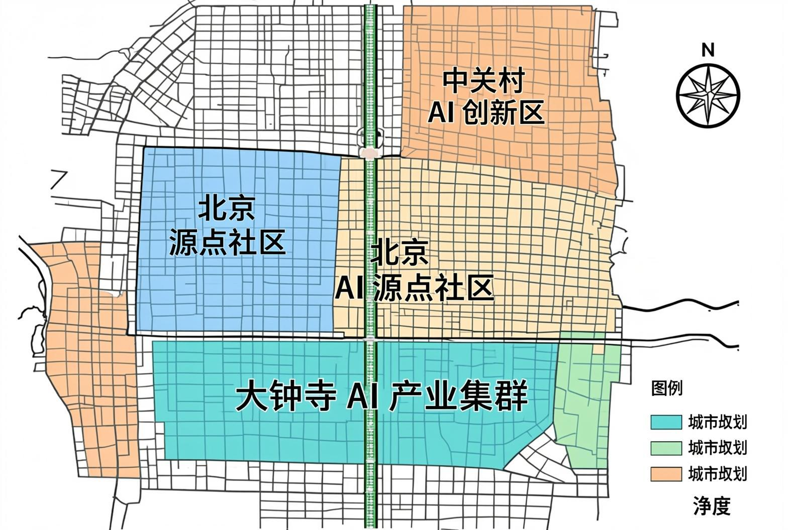
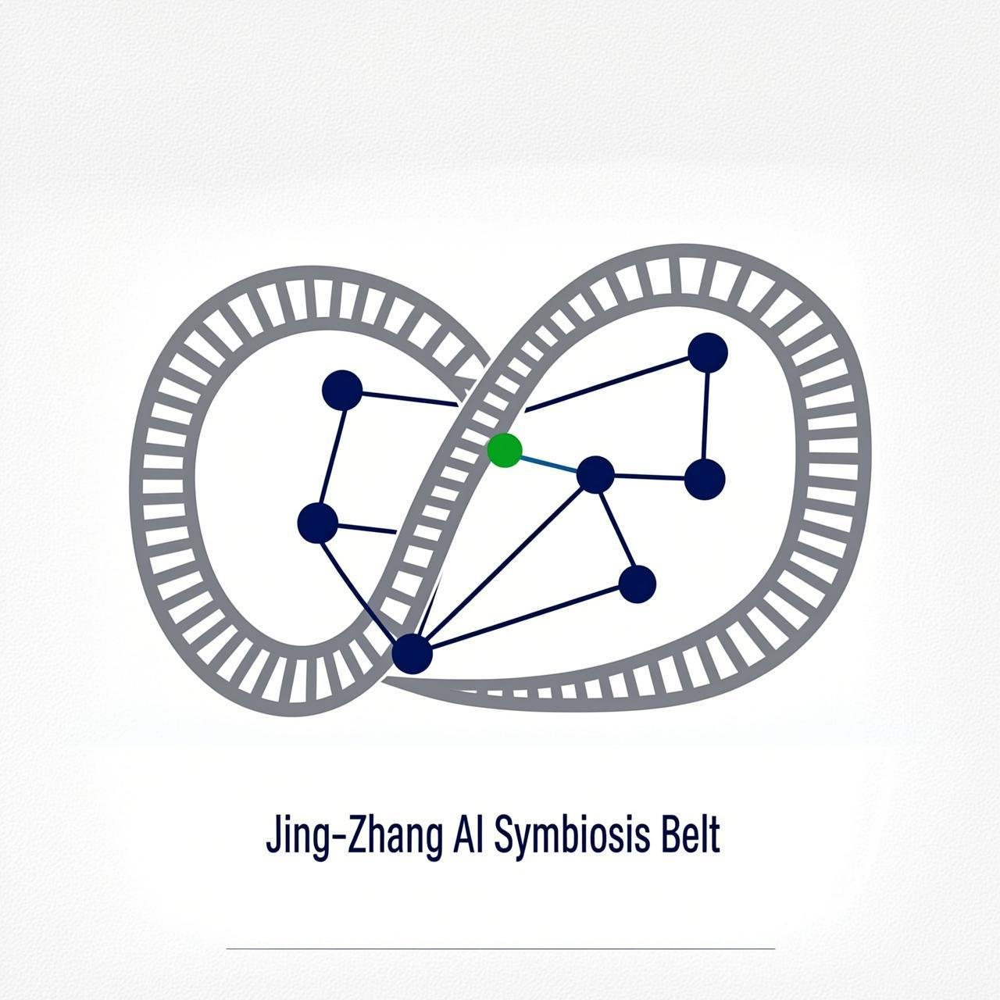
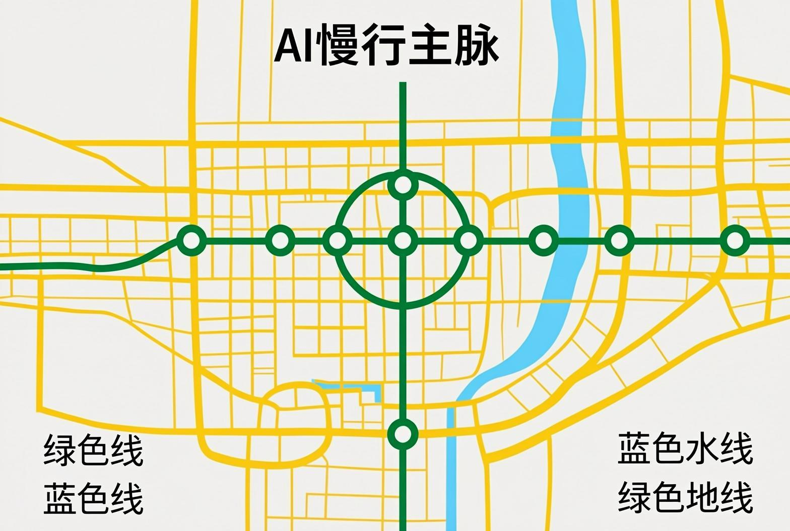
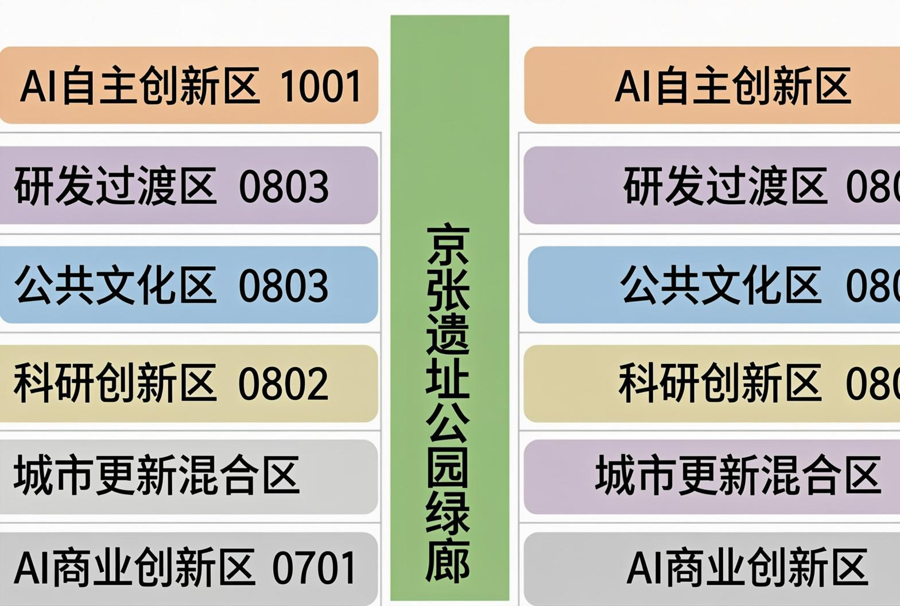
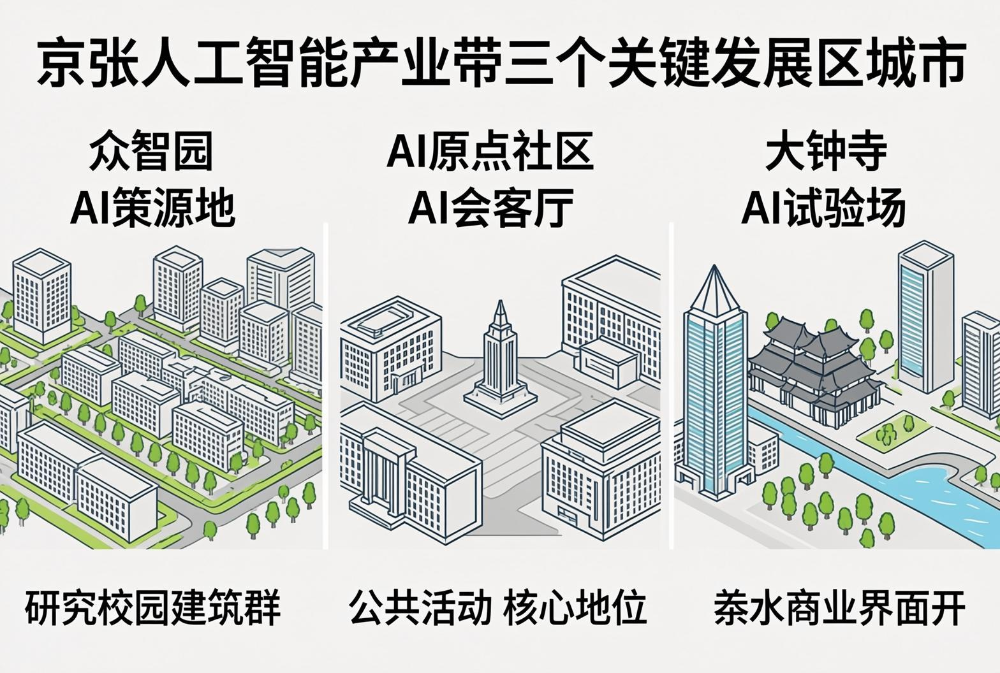

Jing-Zhang AI Symbiosis Belt | 从人字轨到智慧脉 | HXJ192 / TraeWork | 2026-08-08

一脉三区两翼 · 京张AI智慧脉串联三大重点区 · 临时边界标注

品牌Logo概念：铁轨×无限符号×神经网络节点 | 灰#4A4A4A 蓝#0052D9 绿#00E676
| 范围 | 面积 | 边界状态 |
|---|---|---|
| 统筹研究范围 | ~43.6 km2 | 公告文字四至 |
| 总体设计范围 | ~11.4 km2 | provisional |
| 重点区域范围 | ~368.4 ha | provisional |
| 检查项 | 状态 |
|---|---|
| 包结构完整性 | PASS |
| GeoJSON文件 | PASS |
| 举证矩阵 | PASS |
| 版权合规 | PASS |
| 边界条款 | PASS |
| 分区 | 用地代码 | 主导功能 | 边界 |
|---|---|---|---|
| 大钟寺AI商业创新区 | 0901 | AI商业体验、智能零售、产业加速 | provisional |
| 南部城市更新混合区 | 0701 | 居住、社区服务、微更新 | provisional |
| AI原点社区科研创新区 | 0802 | 基础研究、产学研协同 | provisional |
| AI原点核心公共文化区 | 0803 | 开源广场、公共体验、孵化 | provisional |
| 北部研发与生态过渡区 | 1001 | 研发设计、生态缓冲 | provisional |
| 众智园AI自主创新加速区 | 1001 | AI基础研究、算力基础设施 | provisional |
数据源：geometry/land_use.geojson（6条共享站点边界的条带分区，临时边界派生）
| 类型 | 数量 | 代表对象 | 状态 |
|---|---|---|---|
| AI研发与算力建筑 | 5 | BLD-001/002/010/011/012（众智园） | 概念示意 |
| 商业与创新服务建筑 | 4 | BLD-003/004/005/006（大钟寺） | 概念示意 |
| 公共文化与体验建筑 | 4 | BLD-007/008/009（原点社区） | 概念示意 |
| 孵化与创客空间 | 1 | BLD-013（24h创客工坊） | 概念示意 |
建筑体量均为概念示意，高度/容积率待正式控规条件；数据源：geometry/buildings.geojson

京张AI慢行主脉（9km）· 自动驾驶接驳环 · 轨道TOD（五道口/大钟寺）

京张遗址公园活力带 · 小月河滨水绿地 · 众智园生态缓冲

| 区域 | 定位 | 面积 |
|---|---|---|
| 众智园 | AI策源地 — 研发+算力 | ~192ha |
| AI原点社区 | AI会客厅 — 开源+体验 | ~104ha |
| 大钟寺 | AI试验场 — 商业+验证 | ~72ha |
首发触媒：智能体荣誉墙 2026 Q4 | 年度活动：春·开源大会 夏·黑客马拉松 秋·政策论坛 冬·艺术季
| 维度 | 状态 |
|---|---|
| 确定性校验 | PASS |
| 专业证据链 | PASS |
| 空间复核 | PROVISIONAL |
| 合规矩阵 | 全覆盖 (公告 + agent.1~6) |
| 标准矩阵 | 5/5 mandatory |
| 设计深度 | 15/15 items |
| ID | 类别 | 说明 |
|---|---|---|
| ASM-001 | 空间边界 | 临时粗略边界，待官方GIS/CAD替换 |
| ASM-002 | 空间边界 | 三处重点区为临时矩形，非实际地块边界 |
| ASM-003 | 控规条件 | 容积率/高度/密度/绿地率待官方提供 |
| ASM-004 | 现状条件 | 缺现状建筑普查和权属数据 |
| ASM-005 | 拓扑精度 | 用地分区基于临时边界派生，精度受限 |
| ASM-006 | 数据可用性 | 建筑体量为概念示意 |
| 来源 | 类型 | 可用性 |
|---|---|---|
| 资格预审公告 (海淀分局) | 官方公告 | formal-ready |
| Agent任务书摘录 | 清权文件 | formal-ready |
| 临时边界GeoJSON | 暂代数据 | provisional |
| 城市设计管理办法 | 国家法规 | formal-ready |
| 用地用海分类指南 | 国家标准 | formal-ready |